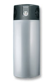

Linija BASIC
predstavlja cjenovno vrlo ugodne i za upravljanje vrlo jednostavne sanitarne toplotne pumpe na osnovi 200 i 300 l bojlera sa agregatom iznad bojlera ili ugrađenim sa strane.
Toplotnu pumpu smjestimo u primjeren prostor (kotlovnica, garaža, podrum..), u kojem želimo postići učinak hlađenja (4 do 5°C).
Na bojler je potrebno dovesti vodovodnu instalaciju (ulaz hladne i izlaz tople vode).
Dodatno dogrijavanje sanitarne vode u zimskom periodu izvedeno je pomoću kotla.
Linija SILVER
predstavlja vrhunac na području sanitarnih toplotnih pumpi sa vrlo kvalitetnim kompresorom, vrhunskim bojlerom i lakim multifunkcijskim upravljanjem, koje omogućava korisniku potpunu slobodu, sigurnost i udobnost.
Toplotnu pumpu namjestimo u primjeren prostor (kotlovnica, garaža, podrum,..) u kojem želimo postići učinak hlađenja (4 do 5°C).
Na bojler je potrebno dovesti vodovodnu instalaciju (ulaz hladne i izlaz tople vode).
Dodatno dogrijavanje sanitarne vode u zimskom periodu izvedeno je pomoću kotla.
Posebna izvedba linije SILVER
sa odvojenim iparivačem namijenjena je korisnicima koji žele poboljšati rashladni efekt pumpe i znatno sniziti temperaturu u podrumu ili skladištu.
Bojler sa kompresorom smjestimo u kotlovnici, a isparivač smjestimo u prostoriji koja treba biti hlađena (najmanje veličine 15m3).
Između kompresora i isparivača je izvedena plinska i električna instalacija do maksimalne udaljenosti od 8m. Na bojler je potrebno dovesti vodovodnu instalaciju (ulaz hladne vode i izlaz tople vode).
Dodatni spremnik vode se može koristiti za pripremanje tople vode u zimskom periodu uz pomoć kotla.
Posebna izvedba linije SILVER
sa usmjeravanjem zraka namijenjena je korisnicima koji žele usmjerenim usisavanjem i ispuhom zraka prozračivati prostore za veću udobnost te sa iskorištavanjem toplog ispusnog zraka osigurati veću učinkovitost toplinske pumpe.
Bojler sa kompresorom smjestimo u kotlovnici, na priključke ulaza i izlaza zraka priključimo zračni kanalski razvod do biranih prostorija, maksimalne udaljenosti 10m.
Na bojler je potrebno dovesti vodovodnu instalaciju (dovod hladne vode i odvod tople vode).
Dodatni spremnik topline može se koristiti za grijanje sanitarne vode zimi uz pomoć kotla.
Visokoiskoristive toplinske pume linije SILVER
predstavljaju najnovija tehnološka dostignuća i predstavljaju pravu revoluciju u području pripremanja tople sanitarne vode.
Dosežu 30% veći grijaći broj, što znači 30% manju cijenu od tradicionalnih toplinskih pumpi.
Toplinsku pumpu smjestimo u odgovarajući prostor (kotlovnica, garaža, ostava), u kojoj želimo postići učinak hlađenja (4 do 5 C).
Na bojler je potrebno dovesti instalaciju vode (ulaz hladne vode i izlaz tople vode).
Dodatni spremnik topline može se koristiti zapripremanje tople vode u zimskom periodu uz pomoć kotla.
|